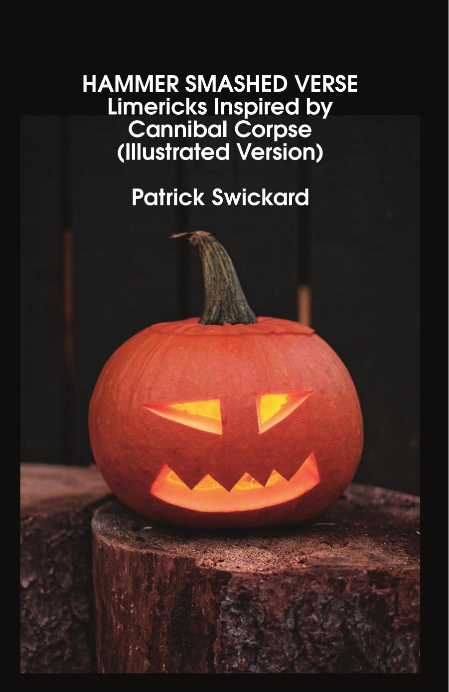
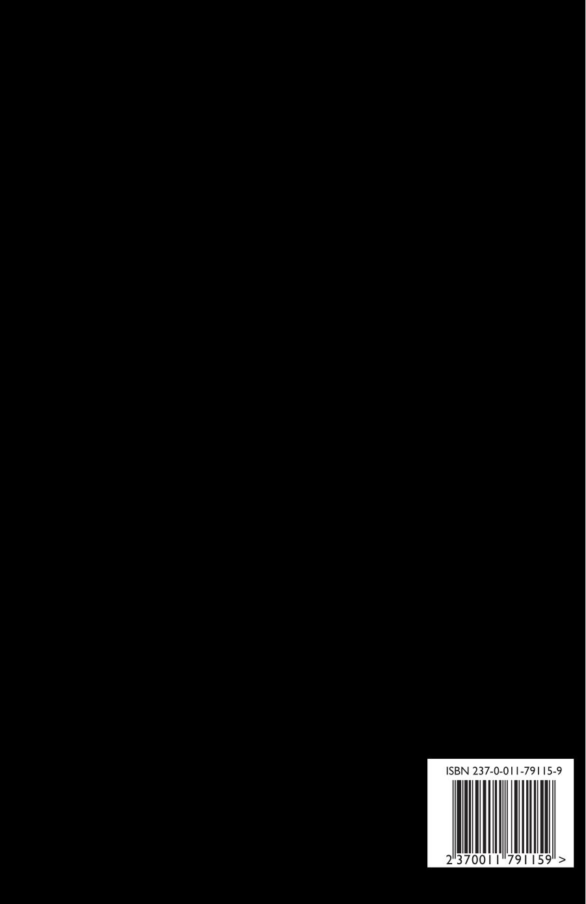

Hammer Smashed Verse: Limericks Inspired by Cannibal Corpse (illustrated)
Patrick Swickard
6"x9" paperback, 200 pages
Countless vermin gnashing at my face
Tear meat from my skull
Swarming, rabid, features are erased
Unrecognizable
Body covered, rat filled innards
Shred internal organs
Heart and lungs consumed from inside but my pain doesn't end
I have not died
Devour, cesspool of vermin
Devour, bloodthirsty rabid
Devoured by vermin
- Cannibal Corpse
A book of limericks inspired by Cannibal Corpse song titles. Good clean spooky Halloween fun! This version is the same limericks as the previous version, adorned with some pleasant open copyright images thrown in for good measure!
Disposal of the body. Sentenced to burn. From skin to liquid. Crushing the despised. Unleashing the bloodthirsty. Ecstasy in decay. Raped by the beast. Sickening metamorphosis. Condemned to agony. And more.